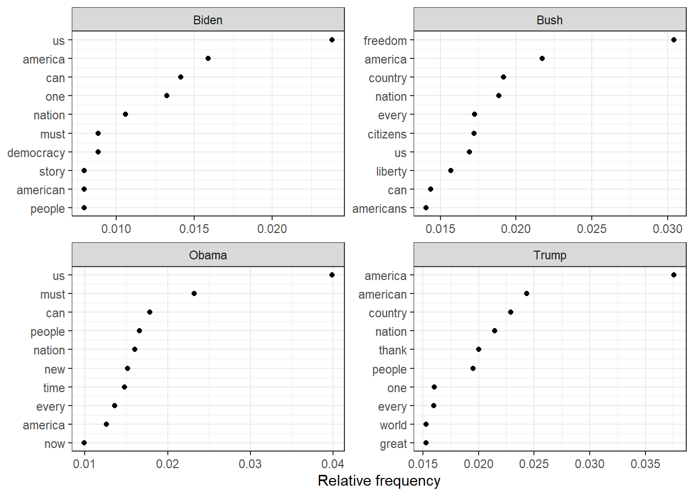
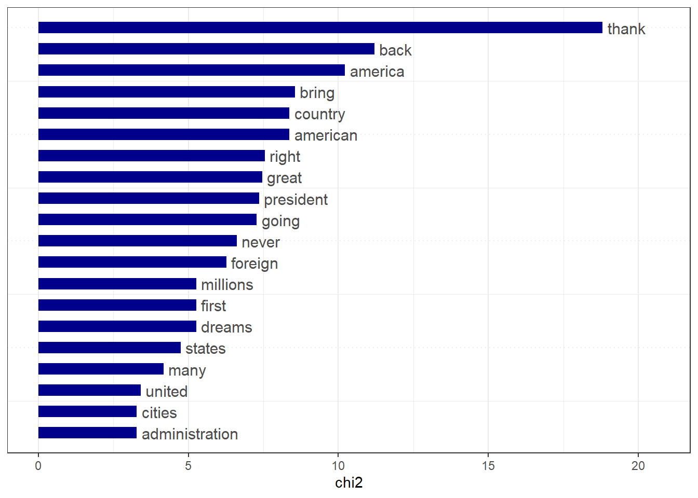
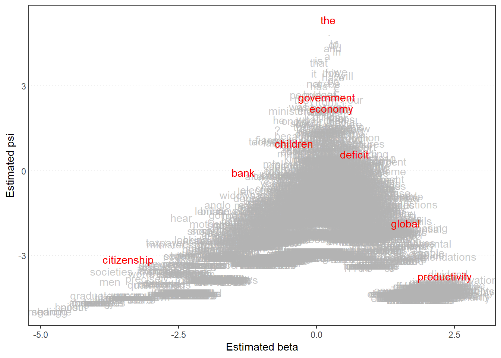
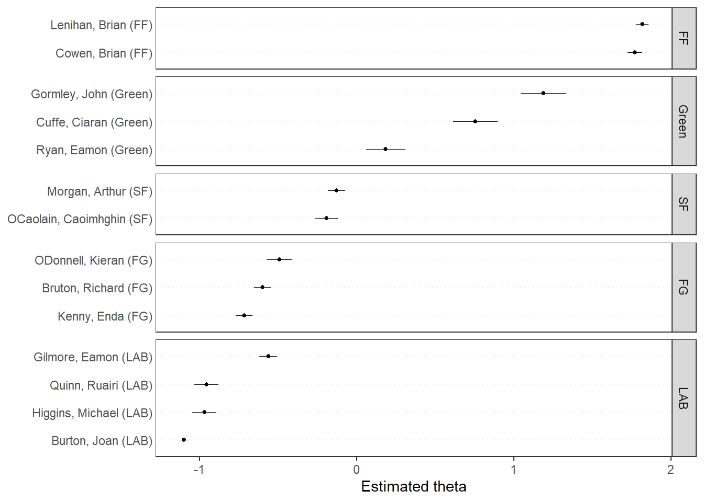
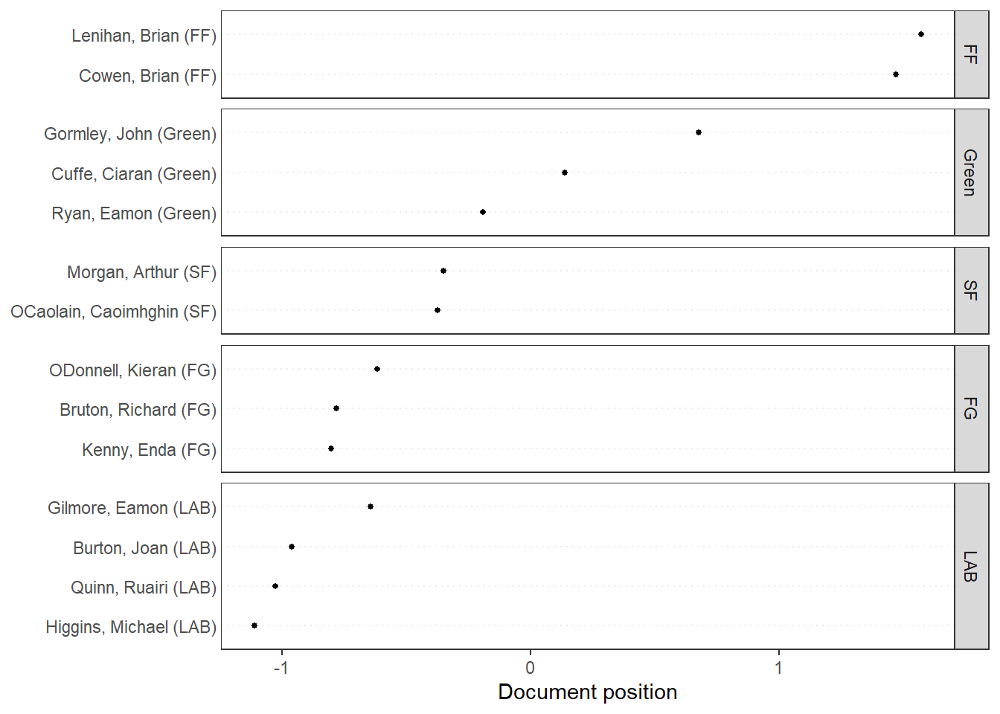
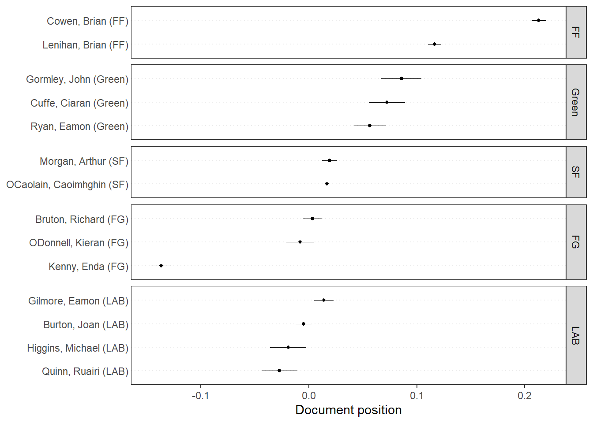

# Wordcloud# based on US presidential inaugural address texts, and metadata (for the corpus), from 1789 to present.dfm_inaug <-corpus_subset(data_corpus_inaugural, Year <=1826) %>%tokens(remove_punct =TRUE) %>%tokens_remove(stopwords('english')) %>%dfm() %>%dfm_trim(min_termfreq =10, verbose =FALSE)set.seed(100)textplot_wordcloud(dfm_inaug)
# Get frequency grouped by presidentfreq_grouped <-textstat_frequency(dfm(tokens(data_corpus_inaugural_subset)), groups = data_corpus_inaugural_subset$President)
freq_weight <-textstat_frequency(dfm_weight_pres, n =10, groups = dfm_weight_pres$President)ggplot(data = freq_weight, aes(x =nrow(freq_weight):1, y = frequency)) +geom_point() +facet_wrap(~ group, scales ="free") +coord_flip() +scale_x_continuous(breaks =nrow(freq_weight):1,labels = freq_weight$feature) +labs(x =NULL, y ="Relative frequency")

b. Obama & Trump
# Only select speeches by Obama and Trumppres_corpus <-corpus_subset(data_corpus_inaugural, President %in%c("Obama", "Trump"))# Create a dfm grouped by presidentpres_dfm <-tokens(pres_corpus, remove_punct =TRUE) %>%tokens_remove(stopwords("english")) %>%tokens_group(groups = President) %>%dfm()
c. Keyness & Trump
# Calculate keyness and determine Trump as target groupresult_keyness <-textstat_keyness(pres_dfm, target ="Trump")# Plot estimated word keynesstextplot_keyness(result_keyness)
Warning: Using `size` aesthetic for lines was deprecated in ggplot2 3.4.0.
ℹ Please use `linewidth` instead.
ℹ The deprecated feature was likely used in the quanteda.textplots package.
Please report the issue at
<https://github.com/quanteda/quanteda.textplots/issues>.

d. Obama
# Plot without the reference text textplot_keyness(result_keyness, show_reference =FALSE)

3. Wordfish
1) What is Wordfish?
“Wordfish is a Poisson scaling model that estimates one-dimension document positions using maximum likelihood (Slapin and Proksch, 2008). Both the estimated position of words and the positions of the documents can be plotted.”
- Quanteda (https://quanteda.io/articles/pkgdown/examples/plotting.html?q=wordfihs#wordfish)
# Plot estimated document positionstextplot_scale1d(wf, groups = data_corpus_irishbudget2010$party)

# Transform corpus to dfmie_dfm <-dfm(tokens(data_corpus_irishbudget2010))# Run correspondence analysis on dfmca <-textmodel_ca(ie_dfm)# Plot estimated positions and group by partytextplot_scale1d(ca, margin ="documents",groups =docvars(data_corpus_irishbudget2010, "party"))

4. Extra
Irish budget speeches from 2010 (data from quanteda.textmodels)
# Transform corpus to dfmdata(data_corpus_irishbudget2010, package ="quanteda.textmodels")ie_dfm <-dfm(tokens(data_corpus_irishbudget2010))# Set reference scoresrefscores <-c(rep(NA, 4), 1, -1, rep(NA, 8))# Predict Wordscores modelws <-textmodel_wordscores(ie_dfm, y = refscores, smooth =1)# Plot estimated word positions (highlight words and print them in red)textplot_scale1d(ws,highlighted =c("minister", "have", "our", "budget"), highlighted_color ="red")
# Get predictionspred <-predict(ws, se.fit =TRUE)# Plot estimated document positions and group by "party" variabletextplot_scale1d(pred, margin ="documents",groups =docvars(data_corpus_irishbudget2010, "party"))

# Plot estimated document positions using the LBG transformation and group by "party" variablepred_lbg <-predict(ws, se.fit =TRUE, rescaling ="lbg")textplot_scale1d(pred_lbg, margin ="documents",groups =docvars(data_corpus_irishbudget2010, "party"))